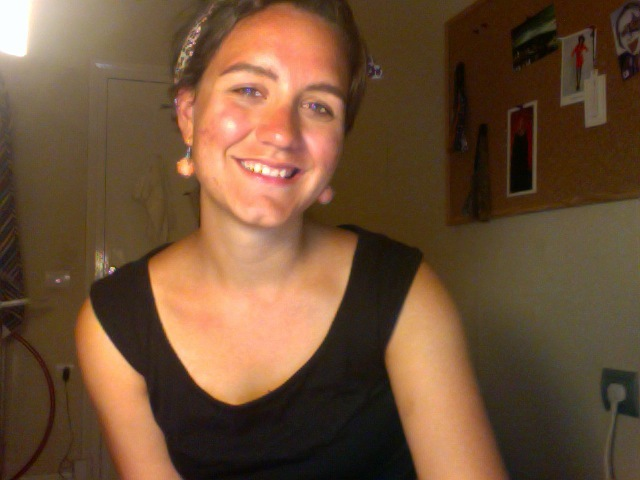

Audrey M Sonntag |
 |
Analyst |
This is one of your few sources for information about Audrey because she stays away from social media in an effort to conserve time and maintain privacy. But, don't get her wrong, she totally loves other humans.
Audrey is a python enthusiast and analytics lover. On weekdays you will find her at George Mason University studying math, or learning new tech skills. She also tries to stay involved with local tech projects.
On weekends she might be sailing, playing board games, chilling with a miniature dachshund named Sammy, cooking elaborate meals, getting out of the city, and generally avoiding computer screens.